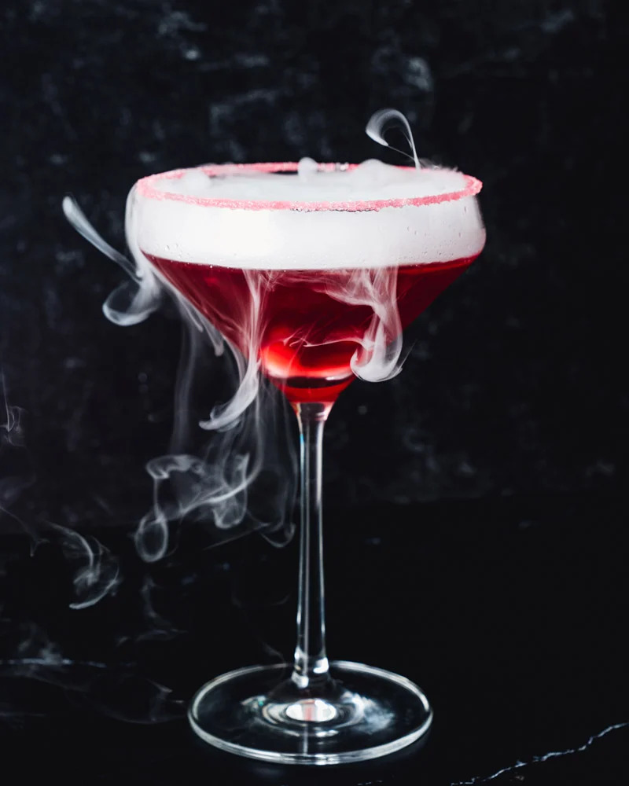

Vampire Cocktail

Description
The Vampire cocktail is a blood red vodka martini with a spooky twist! It's deliciously impressive and perfect for parties.
Ingredients
- 1 + 1/2 ounces vodka
- 1 ounce Chambord
- 1/2 ounce 100% unsweetened cranberry juice (not sweetened or cranberry juice cocktail)
- 1/2 ounce fresh lemon juice
- 1/2 ounce grenadine
- Granulated sugar and additional grenadine, for the sugar rim (optional)
- 1 small dry ice cube, optional
Steps
- Prepare the rim: Place granulated sugar in a single layer on one plate. On another plate, add some grenadine. Spin the rim of the glass in the grenadine until it coats the entire rim. Then dip the glass rim into the plate with the sugar to coat it.
- Make the drink: Add the vodka, Chambord, unsweetened cranberry juice, lemon juice, and grenadine to a cocktail shaker. Add 2 handfuls regular ice cubes and shake until cold. Strain the drink into the prepared glass.
- Break the dry ice into 1-inch chunks (if using): Do this as close to the time you'll be serving the drinks as possible, though you can buy the dry ice a few hours in advance. Start by dropping the plastic bag with the dry ice on the ground several times to allow it break into large chunks. Remember never to touch the dry ice with your bare hands! Put on goggles and gloves.
- Use a chisel to break the dry ice into smaller pieces using a screwdriver or ice pick. The ideal size is 1/2-inch to 1-inch chunks that are large enough to sink to the bottom of the drink, but small enough to disappear in a few minutes. Wrap the small chunks in a towel and place them in a cooler with the top off until you're ready to serve the drinks. Do not place the dry ice in the freezer.
- Add the dry ice: Using tongs (do not touch the dry ice!), add a 1/2-inch to 1-inch chunk of dry ice to the glass, which will sink to the bottom and immediately make a smoking effect. The ice cube will disappear in about 5 minutes.
- Do not drink the dry ice! Wait until the cube disappears before enjoying your drink (or you can take sips with the dry ice in the bottom).